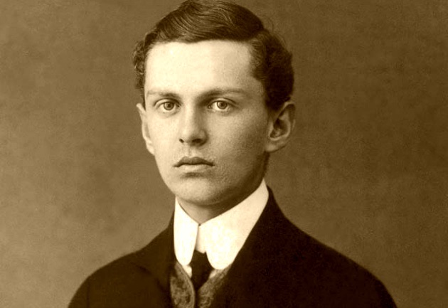

Laici
Laik · Profesor · Katolički intelektualac
Bl. Ivan Merz
1896. – 1928.
Katolički laik, profesor i odgojitelj mladih posvetio je život Euharistiji, liturgijskoj obnovi i apostolatu. Njegovo djelovanje obilježili su vjernost Crkvi i služenje hrvatskoj mladeži.
Tekst je sažet i prilagođen uz pomoć umjetne inteligencije.

Izvor slike
- Spomendan
- 10. svibnja
- Zaštitništvo
- Mladež
- Životni vijek
- 1896. – 1928.
- Rođenje
- 16. prosinca 1896., Banja Luka
- Smrt
- 10. svibnja 1928., Zagreb
- Beatifikacija
- 22. lipnja 2003., Banja Luka; papa Ivan Pavao II.
- Počivalište
- Bazilika Srca Isusova, Zagreb
- Laički poziv
- Zavjet trajne čistoće
Životopis
Ivan Merz doživio je snažno vjersko sazrijevanje tijekom Prvoga svjetskog rata. Nakon studija u Beču i Parizu predavao je francuski u Zagrebu te doktorirao istražujući utjecaj liturgije na francusku književnost.
Kao laik zavjetovao je trajnu čistoću. U Hrvatskome orlovskom savezu odgajao je mlade, promicao Katoličku akciju i liturgijsku obnovu. Njegov apostolat hranili su svakodnevna pričest, adoracija i odanost Crkvi. Pred smrt prikazao je život za hrvatsku mladež. Nadahnuo je Maricu Stanković i buduću zajednicu Suradnica Krista Kralja. Ivan Pavao II. proglasio ga je blaženim kao uzor mladima i vjernicima laicima.
Tekst je sažet i prilagođen uz pomoć umjetne inteligencije.